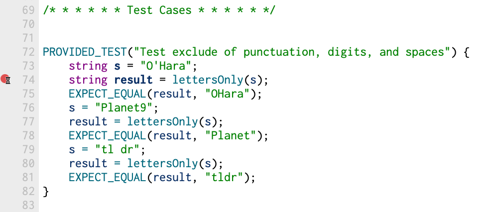

For the Soundex search portion of the assignment you will:
- study a real-world algorithm used by the U.S. Census to encode the phonetic pronunciation of surnames.
- implement the algorithm, developing a function that can take surnames as input and produce phonetic encodings as output.
- implement a console program that allows users to input a surname and then find all matches in a database of Stanford surnames that have the same encoding.
- respond to a few reflective questions on the efficacy and limitations of this algorithm.
The coding is mostly C++ string processing, along with a little bit of file reading and use of Vector. You'll also be practicing with use of decomposition and a test-as-you-go strategy. The two files you will be editing are soundex.cpp (for the code) and short_answer.txt (for responses to thought questions).
Why phonetic name matching is useful
One of the more pesky features of the English language is the lack of consistency between phonetics and spelling. Matching surnames can be vexing because many common surnames come in a variety of spellings and continue to change over time and distance as a result of incorrectly inputted data, cultural differences in spelling, and transliteration errors.
Traditional string matching algorithms that use exact match or partial/overlap match perform poorly in this messy milieu of real world data. In contrast, the Soundex system groups names by phonetic structure to enable matching by pronunciation rather than literal character match. This makes tasks like tracking genealogy or searching for a spoken surname easier.
Soundex was patented by Margaret O'Dell and Robert C. Russell in 1918, and the U.S. Census is a big consumer of Soundex along with genealogical researchers, directory assistance, and background investigators. The Soundex algorithm is a coded index based on the way a name sounds rather than the way it is spelled. Surnames that sound the same but are spelled differently, like "Vaska," "Vasque," and "Vussky," have the same code and are classified together.
How Soundex codes are generated
The Soundex algorithm operates on an input surname and converts the name into its Soundex code. A Soundex code is a four-character string in the form of an initial letter followed by three digits, such as Z452. The initial letter is the first letter of the surname, and the three digits are drawn from the sounds within the surname using the following algorithm:
- Extract only the letters from the surname, discarding all non-letters (no dashes, spaces, apostrophes, …).
-
Encode each letter as a digit using the table below.
Digit represents the letters 0 A E I O U H W Y 1 B F P V 2 C G J K Q S X Z 3 D T 4 L 5 M N 6 R - Coalesce adjacent duplicate digits from the code (e.g.
222025becomes2025). - Replace the first digit of the code with the first letter of the original name, converting to uppercase.
- Discard any zeros from the code.
- Make the code exactly length 4 by padding with zeros or truncating the excess.
Note that Soundex algorithm does not distinguish case in the input; letters can be lower, upper, or mixed case. The first character in the result code is always in upper case.
To ensure you understand the construction, get a piece of scratch paper and manually compute a few names, such as "Curie" (C600) and "O'Conner" (O256).
Q10. What is the Soundex code for "Angelou"? What is the code for your own surname?
Decomposing the problem
Your best strategy for approaching a complex algorithm like this is to decompose the problem into smaller, more manageable tasks and proceed step by step, testing as you go.
Q11. Before writing any code, brainstorm your plan of attack and sketch how you might decompose the work into smaller tasks. Briefly describe your decomposition strategy.
To get you started, we're going to walk you through what it might look like to decompose and implement the first step of the Soundex algorithm. Decomposition is important here because if you tried to implement a single function that accomplished the whole Soundex algorithm all in one go, you could end up with one big, unwieldy piece of code. However, if you break down the problem into a number of different steps, each corresponding to its own helper function, you can develop these helper functions one at a time and test each one as you go.
For example, Step 1 of the Soundex algorithm could be implemented as a helper function that extracts only the letters from a string. The C++ library function isalpha will report whether a character is alphabetic (i.e. is a letter). Here is a starting point (provided for you in soundex.cpp):
// WARNING: Code is buggy! Add test cases to identify which inputs are mishandled
string lettersOnly(string s) {
string result = charToString(s[0]);
for (int i = 1; i < s.length(); i++) {
if (isalpha(s[i])) {
result += s[i];
}
}
return result;
}
Testing, testing, testing
With this draft implementation of lettersOnly, the next step is to test it. Our starter code includes some provided tests to get you started. Run the program and when prompted, select the option from the menu for tests from soundex.cpp. When you run these provided tests, you will see that the tests for the lettersOnly function all pass. From this, you might conclude that the function is good to go. However, there is a problem lurking within the code that has yet to be uncovered!
Review our provided test cases to see what sorts of inputs we tested, and, more importantly, what sorts of inputs we didn't test. Brainstorm what those missing cases are and then add them. Think about edge cases that could lurk in the extremes or cases that are uniquely distinguished from the provided tests, such as a completely empty string or a string composed of only non-letter characters.
Add at least 1 new student test to expose the bug in the given implementation of lettersOnly.
Your goal in writing tests is to enumerate a comprehensive set of tests that brings any bugs in the code to light so you can debug and fix them. Good tests are the key to writing robust software. A great developer is not only a great coder, but also a great tester.
Debugging a failing test case
Once you have added a test case that fails, use the debugger to get more information about how the function has gone wrong. Set a breakpoint within the code block that contains your test case. A good place to stop is on the line with the operation that you want to trace through, like so:

Now run the tests while using the debugger. When you hit the breakpoint, single step through the call to lettersOnly while watching the debugger's variables pane to see how the values are changing. This "step-and-watch" approach is the same as you used in the Assignment 0 debugging tutorial.
Using the debugger should help you find the bug —once you understand it, go ahead and fix it!
Implementing the Soundex algorithm
With your fix, you have a working helper function that implements the first of the Soundex algorithm steps. Now for each subsequent step of the algorithm (encode, coalesce duplicates, and so on), follow the same process:
- Identify the next small task of the algorithm to implement.
- Define a new helper function to accomplish that task.
- Write student tests that confirm the expected behavior of the new function.
- Fill in the code for your helper function, debugging as you go. Continue writing code and debugging until you have passed all the tests from the previous step.
- Rinse and repeat.
Your eventual goal is to implement the function:
string soundex(string s)
The top-level function will use the helper functions that you have written and tested. In addition to the test cases for the individual helper functions, you will also need test cases for the top-level function. The starter code has a number of provided test cases to get you started, but you should also add tests of your own to ensure you have covered the full possible range of inputs.
Developing a census search program
The capstone of this part of the assignment is to build a program that emulates the way in which the U.S. Census uses the Soundex algorithm. This console program allows a user to perform a Soundex search on a database of surnames. Implement the following function prototype:
void soundexSearch(string filepath)
The one argument to soundexSearch is the name of a text file containing a database of names. The program then repeatedly allows the user to enter a surname to look up in the database. For each surname that is entered, the program calculates the Soundex code of the entered name and then finds all names in the database that have a matching Soundex code. Here are the steps for the program:
- Read a database of surnames from the specified text file.
- This step is provided for you in the starter code. The "database" is simply a
Vector<string>.
- This step is provided for you in the starter code. The "database" is simply a
- Prompt the user to enter a surname.
- The function
getLinefrom"simpio.h"will be helpful here.
- The function
- Compute the Soundex code of the surname.
- Iterate over the Vector of names, compute Soundex code of each name, and gather a result Vector containing those surnames with a matching code.
- Print the matches in sorted order.
- The Vector has a handy
sort()operation (you can usevec.sort()wherevecis the name of your vector), and you can print a vector using the<<operator, e.g.cout << vec << endl;. Please note that thesort()function sorts the vector in place and does not return a value.
- The Vector has a handy
- Repeat steps 2-5 until the user indicates that they are done.
To run the Soundex search program, you will need to change the main() function from its previous use in the perfect number warmup. Open the file main.cpp and edit the main() to comment out the call to findPerfects and uncomment the call to soundexSearch. Now when you run the program and select no tests, the main() function will execute and enter the Soundex search console program.
Below is the output from a sample run of the program. If you are able to match this sample output exactly, then you have successfully completed this part of the assignment!
Read file res/surnames.txt, 29409 names found.
Enter a surname (RETURN to quit): Zelenski
Soundex code is Z452
Matches from database: {"Zelenski", "Zelnik", "Zelnis", "Zielonka"}
Enter a surname (RETURN to quit): hanrahan
Soundex code is H565
Matches from database: {"Hammerman", "Haner-McAllister", "Hanrahan", "Honarmand"}
Enter a surname (RETURN to quit):
All done!
Considering limitations of Soundex
Take a few moments to first watch this short video from Katie Creel, our CS Ethicist-in-Residence, giving some background context for the Soundex algorithm. You will need the content presented in this video to complete the ethical reasoning short answer questions below.
A consistent theme of this class is that we want you to consider the ethical implications of the choice of algorithm. Like many of the algorithms we will encounter in CS106B, Soundex is used in real systems. For example, the U.S. Census has relied on a variation of the Soundex algorithm for almost a century. But just because it has been used in practice does not make it a perfect algorithm! Now that you understand how Soundex works, we want you to consider some of its limitations.
Q12. Think about one or more examples of a class of names that the Soundex system might not work well for. Explain what this class of names is and why the system might incorrectly group them or mis-categorize one of the names.
(Hint: You may find it useful to look over the other possible phonetic systems in Extending Your Phonetic Algorithm.)
As you know, not all names can be represented using ASCII; many are more accurately represented using Unicode. However, ASCII is the default standard in C++ and many other programming languages and computer systems. The strings you've been working with in this assignment all use ASCII.
Q13. Suppose you are a software engineer working for the U.S. government. You have been tasked with implementing a system that collects names as part of the Census survey and analyzes these names using a phonetic algorithm. Your boss suggests using Soundex and notes that the algorithm is only expected to work for ASCII-encoded strings, since supporting Unicode would require extra work and time. What would your response be and why? What representational harms might result from building a system that exclusively uses Soundex and/or ASCII?
Additional advice for testing
- Testing is key for implementing this problem. Make sure that you take advantage of the SimpleTest testing framework!
- If a test is failing, put a breakpoint inside the failing test, and step through the code line by line using the debugger. Keep an eye on the variables pane —that will be your most helpful resource to figure out what is going wrong!
- The starter project includes a text file
res/surnames.txtcontaining the surnames of Stanford students, faculty, and staff for the use of Soundex search. There are some 29,000 unique surnames within the Stanford community, wow! For early testing, you may want to change the program to read names from the fileres/small.txtinstead, which contains a tiny set of names that is easier to debug on. - All of the input strings we will use to test your
soundexfunction are guaranteed to contain at least one letter character. This means you do not have to make a special case insoundexto handle a string that doesn't any letters at all (e.g. no empty string or string containing only digits or punctuation).
Useful resources
- On the Qt Creator window, there is search field in the lower left labeled with a magnifying glass icon. If you enter the name of a header file (e.g.
strlib.horcctype), Qt will display its contents. This is a quick way to review the features of a given library. - You can also browse/search all library documentation online:
- For this assignment, you will be using library functions that operate on strings and characters, in particular:
- The standard library string functions
length,substr,concat,replace, etc. will be useful, along with the Stanford-specific string functions in strlib.h. - For case conversions, you can use the functions in cctype to convert a single
charor string functions in strlib.h to convert an entire string. - Remember that C++ treats individual characters differently than strings of characters. Individual characters have type
charand are enclosed in single quotes (i.e.'a'not"a"). Strings have typestringand enclose a sequence of characters in double-quotes (i.e."hello"not 'hello'). There are helpful functions in strlib.h to aid you with converting between the two, including thecharToStringandstringToCharfunctions. - In a similar vein, the integer 5 is a distinct beast from the digit character '5' or the string "5". Take care to express the type carefully to match your intentions.
- Our guide to C++ strings
- The standard library string functions
- CS106B has a library of useful functions and collection classes including
Vector,Set,Mapand others, that are specifically designed for our ecosystem. All of these functions and classes are available for you to use. Bookmark the library documentation and keep it handy.- You may have heard of similar collection classes provided in the C++ Standard Template Library (STL). Do not use the STL versions in CS106B. As a helpful mnemonic to distinguish between the two, our class names are always capitalized (
Queue) whereas STL class names are all lowercase (queue). Stick to the capitalized ones!
- You may have heard of similar collection classes provided in the C++ Standard Template Library (STL). Do not use the STL versions in CS106B. As a helpful mnemonic to distinguish between the two, our class names are always capitalized (
- Our guide to Transitioning from Python to C++
- Textbook
Soundex references
- https://www.archives.gov/research/census/soundex
- Online Soundex code calculator: https://www.functions-online.com/soundex.html
Extending your phonetic algorithm
If you have completed the assignment and want to go further, we encourage you to try working on an extension! There are many other phonetic systems out there besides Soundex. Here is a non-extensive list:
Try implementing one of these other systems and see if you can get better or more intuitive surname matches! When implementing an extension, add a new .cpp file to your project that contains the extension code, keeping it separate from the regular Soundex implementation. If you have other creative ideas for extensions, run them by the course staff, and we'd be happy to give you guidance!